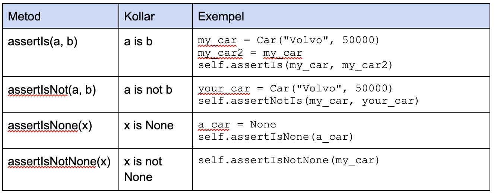
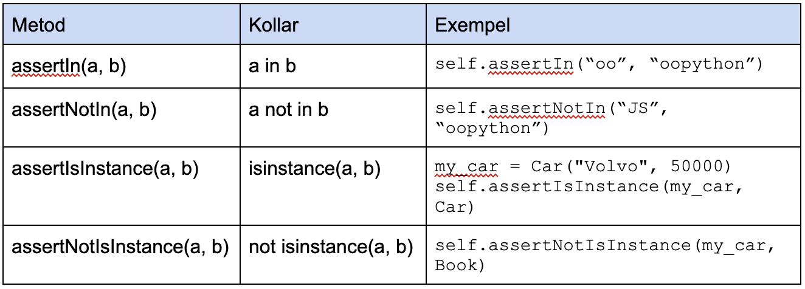

kmom02 Testning del 1
Tester och testmetoder
Vad är testning?
- validera programmets funktionalitet
- identifiera fel (defekter) i programmet
Likheter debugging och testning
- Syftet - säkerställa att programvaran funkar som den ska och uppfyller kraven
- Båda identifierar fel i koden
- Båda är en del av utvecklingsprocessen
Skillnad debugging och testning
- Debugging - hitta kända fel/buggar i vår kod genom att stegvis kolla värden på variabler samt flödet i koden med debugger t ex med Thonny
- Testning - att skriva testkod som verifierar vår kods funktionalitet samt för att hitta eventuella fel/buggar
- Testning genomför kontinuerligt medan debugging görs när en bugg upptäcks
Varför testning?
- Ett kvalitetsbevis, programmet funkar om testerna går rätt
- Underlättar vid underhåll/uppdatering av koden
- Underlättar vid refaktorering
- Testprogrammet eller enstaka tester kan köras om och om igen
- Testprogrammet kan schemaläggas
- Skriver ut fina rapporter
Några olika typer av testning
- Enhetstest, varje enhet testas för sig
- Integrationstest, testar om enheterna funkar ihop
- Systemtest, testar hela programmet
- Acceptanstest, kunden testar programmet för att kunna godkänna det
Olika testmetoder
- GUI, användargränsnittet
- Blackbox, okänd kod
- Whitebox, koden är känd
Enhetstestning i python
- Ofta används ett testramverk, i vårt fall unittest
- Testklass som testar en klass
- Testmetoder
Kodning del 1
Vi ska sätta upp testmiljön kring klassen Account.
Assertmetoder
Assertmetoder fortsättning

Assertmetoder fortsättning

Tänk på när du gör testfall
- Minst 1 testklass per klass
- Testerna ska gå att upprepa
- Testerna ska vara oberoende
- Ingen I/O i testkoden
- Både positiva och negativa testfall
- Testa all funktionalitet
Tänk på när du gör testfall fortsättning
- Testa “alla” möjliga flöden i koden
- Testa felaktiga värden
- Testa randvillkor (edge cases)
- Hellre flera testfall än många assert i samma metod
- Ersätt slumpade värden med valda värden, seed
Att skriva ett testfall
- Arrange, förbered inför testfallet
- Act, gör ditt test
- Assert, validera utfallet av ditt test
Kodning del 2
Vi ska göra testfall på klassen Account.
Fler assertmetoder